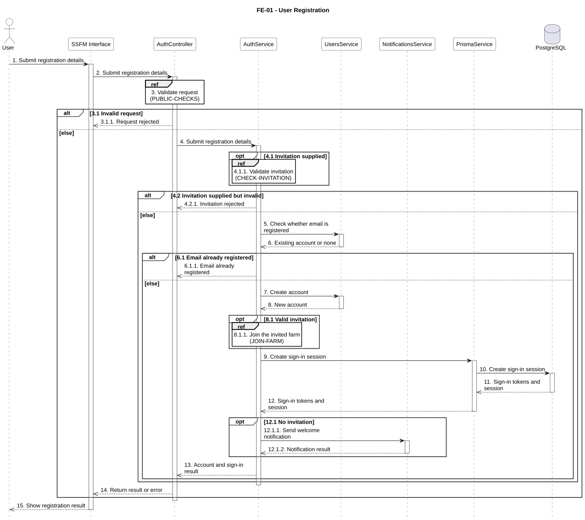

FE-01 Existing workflowReport 4 · 3.1.2.1
User Registration
Các bước chính và tùy chọn, theo điều kiện trên sơ đồ: Submit registration details → Validate request → Validate invitation → Check whether email is registered → Create account → Join the invited farm → Create sign-in session → Send welcome notification.
Xem sơ đồ
